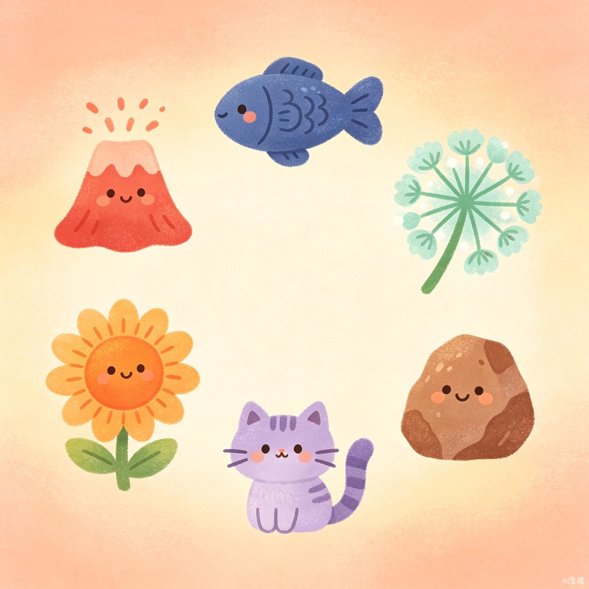

情绪人格
解码器
10 道情景选择题，测测你的情绪系别。火系、水系、草系、光系、月系、山系——找到属于你的情绪小宇宙。

三步解码你的情绪系别
情景选择题
日常场景，直觉作答。不用深思熟虑，选那个最先跳出来的反应。
四维情绪画像
感知力、表达倾向、恢复策略、重评倾向，四个维度拼出你的情绪地图。
匹配情绪系别
生成你的专属系别卡片 + 人设标签，一键分享到朋友圈。
感知力
觉察情绪
的敏锐度
表达倾向
向外表达
还是向内消化
恢复策略
从情绪中
恢复的方式
重评倾向
重新解读
情境的习惯
六种情绪系别
每一种系别都是一种情绪应对的「人设」，没有好坏，只有你更熟悉的那个自己。
火系 · 易燃易爆
小火山 🌋「情绪写在脸上，炸完就没事了。」
来得快、去得也快，不藏着掖着。你的喜怒哀乐都很鲜明，身边的人永远知道你在想什么。
水系 · 内耗大师
深水鱼 🐟「别人没说，你已演完一部剧。」
感受细腻，容易在心里反复推敲。表面风平浪静，脑海里可能已经排演了好几场大戏。
草系 · 人间充电宝
蒲公英 🌱「朋友都爱找你聊天。」
温和又有韧性，擅长倾听和安慰。你像一块情绪海绵，吸收身边人的负能量，再悄悄自我消化。
光系 · 乐观废人
向日葵 🌻「天塌了也能笑，但笑完忘了跑。」
天生擅长发现好的一面，心态积极到让人羡慕。只是有时候乐观过了头，反而容易忽略现实的坑。
月系 · 深夜哲学家
夜猫 🐱「白天属世界，深夜属自己。」
夜深人静时，你的思绪最活跃。喜欢独处、 introspection，对世界有一套自己的解读方式。
山系 · 定海神针
大石头 🪨「全慌了就你没慌。」
情绪稳定，抗压能力强。你不轻易被外界影响，是朋友圈里最可靠的「定心丸」。
科学依据
测试设计参考了情绪心理学领域两项经典理论，让结果不只是娱乐，更是一次轻量化的自我觉察入口。
情绪调节过程理论
James Gross（1998）提出，人们会通过情景选择、注意分配、认知改变、反应调整等策略调节情绪。测试中「恢复策略」与「重评倾向」维度即源于此。
情绪粒度理论
Lisa Feldman Barrett（2016）指出，能精细区分并命名情绪的人，情绪调节能力更强。六种系别正是帮助用户建立情绪标签的尝试。
谁适合玩？
专为 18-30 岁喜欢自我探索的年轻人设计，几分钟就能收获一个关于自己的新视角。
社交破冰
聚会/群聊话题
自我探索
了解情绪模式
朋友圈分享
生成专属海报